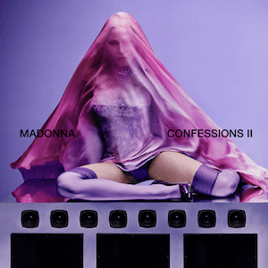
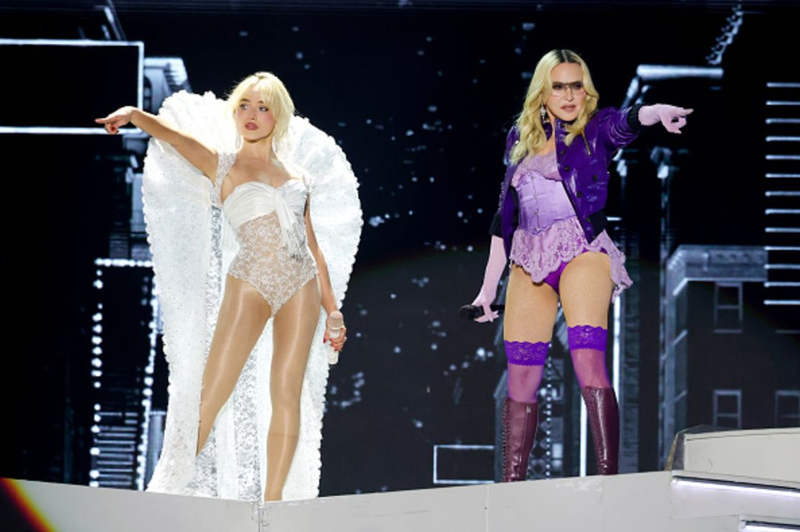
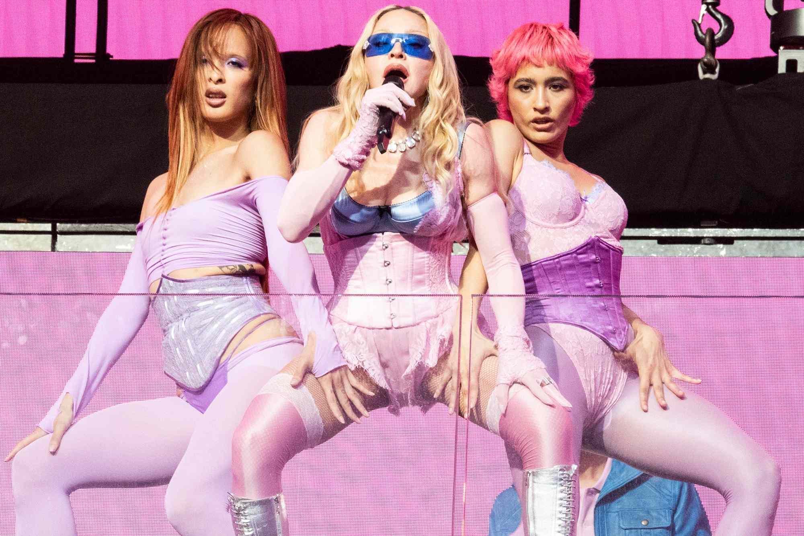
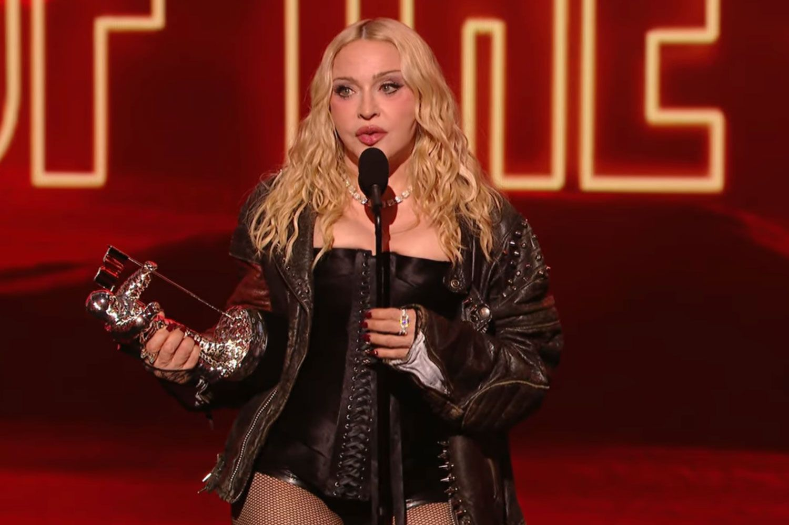

CONFESSIONS II es el quinceavo álbum de estudio de Madonna. Lanzado a la venta en 2026, este proyecto fue el primer álbum de la Reina del Pop en más de 7 años. Tras terminar su contrato con Interscope Records, Madonna volvió a Warner Music y tras casi morir, se reunió en 2023 con Stuart Price (productor del primer Confessions) para crear una secuela que le diera un giro moderno al sonido del original. CONFESSIONS II ha sido el álbum más exitoso de Madonna desde 2012 y su más aclamado por la crítica desde el primer Confessions en 2005. Este álbum retoma sonidos de varias etapas de la carrera de Madonna como el pop, trip hop, house, techno y sonidos tanto latinos como franceses.

Madonna cantando en el set de Sabrina Carpenter en Coachella 2026 (luego de esta presentación le robaron la chaqueta que tenía puesta).

Madonna presentándose en Times Square en colaboración con la aplicación Grindr.

Madonna arrasando todas las categorías de los VMAs del 2026.